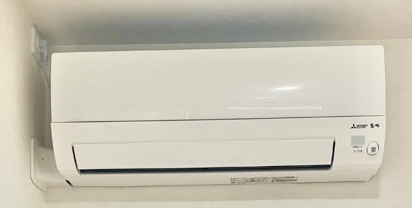

新築工事・打ち合わせ用
ワンダーハウス確認リスト
照明・スイッチ 1〜5
- 1玄関〜ホール〜洗面室のセンサー連動家に入ったら玄関・ホールの照明がつき、そのまま洗面室（ミニ洗面台）で手を洗う間もついたままにしたい。センサー付きダウンライトは、できる限り東に付けたい。

1 階の俯瞰。オレンジの矢印が帰宅してからミニ洗面台までの動き。赤丸が今の玄関ホールのセンサー付きダウンライト（シミュレーターの画面） 玄関を入った所のセンサー付きダウンライトと連動して、ほかの照明もオン・オフできるか。そのセンサー付きダウンライトをどこに付ければ、帰宅したときとミニ洗面台を使っている間に照明がつきっぱなしになるか - 2階段の照明を「かってにスイッチ」でつけ消し階段の照明は、1 階・2 階・3 階の階段の上り口・下り口にパナソニックの「かってにスイッチ」（WTK18115WK・熱線センサ付自動スイッチ・3 路配線対応形・中心 FL+900）を付けて、人が来たら自動でつき、いなくなったら消えるようにしたい。1〜2 階の階段は 1 階と 2 階の上り切りの 2 か所、2〜3 階の階段は 2 階の上り口と 3 階の下り口の 2 か所のスイッチで、どちらからでも同じ照明がつく（3 路）。位置は電気図。

1 階の階段の上り口。かってにスイッチ（中心 FL+900）と、それでつく階段のブラケット（シミュレーターの画面） かってにスイッチ 2 つで 1 つの照明をつけ消しできるか（3 路の配線）。上り下りの途中で消えないか（点灯時間の設定） - 3車庫の北の壁の上の間接照明と表札灯の点灯車庫の北の壁の上に、幅 200・150 上げる折り上げ天井を作り、その中に間接照明（ライン）を入れたい。表札灯は Panasonic LGWJ50127K LE1（明るさセンサ付）にしたい。暗くなると表札灯と車庫の間接照明が一緒につくようにしたい。器具の仕様図では、電源ユニット内蔵で自動点滅器との併用は不可、明るさセンサのまわりは 50cm 以上空ける、ひさしの下などは明るいうちに点灯することがある、となっている。

車庫の北の壁の上（夜）。折り上げ天井の中の間接照明（シミュレーターの画面） 
南から見た玄関ポーチと車庫。表札灯と、車庫の北の壁の上の間接照明（シミュレーターの画面） この折り上げ天井と間接照明ができるか。表札灯の器具の手配はどちらか。表札灯の内蔵センサーでは車庫の照明まで動かせないと思うので、車庫の照明は別に EE スイッチなどの明るさセンサーを入れる形でよいか、同じ元のスイッチから分けられるか。張り出しの下でセンサーが誤作動しないか - 4寝室のフットライトと枕元のスイッチ寝室の東の壁の、WIC の入口と寝室の入口の間の真ん中（y 1416）にフットライト（Panasonic SLBJ71002）を付けたい。寝室の照明のスイッチと連動させたい。枕元（ベッド 2 台の間、ヘッドボードの棚のすぐ上）にスイッチを追加して、入口のスイッチと 3 路にしたい。枕元のコンセント 2 か所はベッド側を向く（幕板の奥の面）。ヘッドボードの間接照明（ライン）と幕板は施主が後から自分で付けるが、間接照明も寝室のスイッチ（入口と枕元の 3 路）でつけ消ししたい。

2 階 寝室の東の壁。WIC の入口と寝室の入口の間のフットライト（シミュレーターの画面） 
2 階 寝室の枕元。造作のヘッドボードの棚と、その上の横向きのスイッチ（シミュレーターの画面） この位置にフットライトを付けられるか。フットライトを寝室のスイッチ（入口と枕元の 3 路）と連動させられるか。明るさセンサー付きの SLBJ71002 をスイッチ連動で使えるか（センサーなしの機種がよいか）。後から付けるヘッドボードの間接照明のために、この 3 路のスイッチで入り切りできる電源（配線の取り出しか、スイッチ連動のコンセント）をヘッドボードの中に用意してもらえるか - 52 階 キッチンのアイランドの天板の裏に間接照明アイランドの階段側（西）の、天板の下が空いたカウンター（奥行 236）の天板の裏に、ラインの間接照明（長さ 約 1770・下を照らす）を付けたい。点け消しは、キッチンのスイッチの一番上「下がり天井の上の間接照明」と同じ回路にする。配線・電源（ドライバー）は天板の裏や本体の中を通して見えないようにしたい。

2 階 階段側からアイランドを見た所（夜）。天板の裏の間接照明で、カウンターの下の面が照らされている（シミュレーターの画面） 天板の裏に付けられるライン照明の機種（WH で用意できるか、施主支給か）。配線の経路（アイランドの床からの立ち上がり・天板の裏で見えないように）と、ドライバー（電源）を置く場所。下がり天井の間接照明と同じ回路にできるか
コンセント・分電盤・LAN 6〜15
- 6分電盤とリモコン類をパントリーへ2階パントリー（キッチンの北の納戸）に移したい。分電盤は西の壁の北の壁寄り（下端 FL+1600、冷蔵庫の側面から約 300 離す）。インターホン親機・給湯器リモコン・熱交換器リモコンはキッチン側の壁から、エアコンの下の北の壁へ横に並べて移す（下端 FL+1340 前後。並びの東の端にパントリーのスイッチ）。

2 階のパントリーを入口から見た所。西の壁の分電盤と、エアコンの下の北の壁のリモコン類（左から インターホン親機・給湯器・熱交換器・パントリーのスイッチ）（シミュレーターの画面） 分電盤とインターホン親機・給湯器リモコン・熱交換器リモコンを、この位置に付けて問題ないか - 7光回線と LAN の配線屋外からパントリーまで光引込用の空配管1ルート（呼び線付き・ONU の位置まで連続）と、パントリーに光コンセント1か所。北の壁の西寄り（棚の 2 段目の中。LAN 端子とコンセントは中心 FL+1360 前後、光コンセントは中心 FL+1210）に、光コンセント・通信機器用の2口コンセント×3（ONU・ホームゲートウェイ・10G ハブ・PoE ハブ用。必要4口・予備込み6口）・LAN 端子7口（①〜⑦、すべて Cat6A・行先表示付き）。そこから壁内に Cat6A を1本ずつ、各行先まで原則1系統1管の連続配管（電源線とは別管）で: ① 3階 南西の書斎（夫・10G）、② 3階 北東の書斎（妻・10G）、③ 3階 子供部屋（1G）、④ 3階 トイレ前の Wi-Fi ニッチ（1G、15 番）、⑤ 2階 リビングのテレビの所（1G）、⑥ 玄関ポーチの防犯カメラ、⑦ 車庫の防犯カメラ。壁内7本・両端のジャック計14口。防犯カメラ2台（施主支給・機種は未定）は PoE 給電（パントリーの PoE ハブから）で、LAN ケーブル1本で電源も送るので 100V のコンセントは要らない。カメラ側は取付ボックスの中に LAN 端子を付けて、短い LAN ケーブルでつなぐ。1台は入居後に付ける予定なので、その分も配線は先に入れてほしい。つなぎ方は下の新居ネットワーク構成図（施主作成・2026.11.04）の通り。

2 階のパントリーの北の壁の西寄り。LAN 端子 7 口・通信機器用のコンセント 2 口×3・光コンセントと、ONU・ホームゲートウェイ・10G ハブ・PoE ハブを置く所（シミュレーターの画面） 
新居ネットワーク構成図（施主作成・2026.11.04） Cat6A のケーブルと配管の両方を入れてもらえるか。管の種類（PF 管など、CD 管に固定しない）と管径、呼び線、プルボックスの位置。電源線と別管にできるか。防火・気密の処理。防犯カメラの所の外壁の貫通と防水、取付ボックス・下地とケーブルが隠れる納まり。両端の行先表示、配管写真・経路図、配線の試験（Cat6A の性能試験ができるか）。機器（ハブ・Wi-Fi 機器）の手配はどちらか - 82階 ダイニングとリビングに床コンセント（2 か所）ダイニングテーブルの下の床（シンク寄り）と、リビングの床（テレビの真正面・ソファの前）に、床コンセントを 1 つずつ付けたい。どちらも Panasonic DUM7001MH（住宅用フロアコンラウンド・アース付1口・グレーメタリック）。

2 階 LDK の俯瞰（キッチンの下がり天井とライティングレールは見やすいように外した）。赤丸が床コンセント 2 か所（シミュレーターの画面） 床にコンセントを付けられるか（床の構造・床下の配線の経路） - 9キッチン背面のコンセント2か所を横向きに電子レンジ用など、今の位置のまま横向きにし、プレートの下端を天板から 100 上（FL+1000）に。

2 階 キッチンの背面（東の壁）。赤丸が横向きにするコンセント 2 か所（シミュレーターの画面） - 102階トイレのコンセントの計画便器の後ろの壁を手前にふかして、中を棚のある収納にする。温水洗浄便座のコンセントはそのふかし壁の裏（奥の北の壁）に付け、便器の後ろの低い所にあけた丸い穴からコードだけを出して、コンセントが見えないようにする。プラグは後から抜き差しできるようにしておく（掃除・交換のため）。

2 階 トイレを上から見た所。便器の後ろのふかし壁の中を棚の収納にし、コンセントはその裏、コードは便器の後ろの低い所の穴から出す（シミュレーターの画面） この納まりにできるか（ふかし壁の奥行きと棚、コードを通す穴の位置と大きさ、コンセントの高さ） - 11スマートドア用コンセントの位置玄関ドア（YKK AP ヴェナート・ポケット Key 付き）の電源のコンセントは、壁の中に入る（プレートが見えない）ものだと思っている。この理解で合っているか（スマートドアの電源は壁の中に入って、外からは見えないか）
- 12洗面脱衣室の壁内収納の中にコンセント洗面脱衣室の壁に埋め込む収納（奥行 160）の中、歯ブラシ除菌器を置く段の奥の壁にコンセントを付けたい（中心 FL+1420 くらい）。

1 階 洗面脱衣室の壁内収納（扉を開けた所）。赤丸が収納の中に付けたいコンセント（シミュレーターの画面） 壁内収納の中（奥の壁）にコンセントを付けられるか（壁の厚み・裏のホール（北）側のふかし壁との取り合い） - 13スイッチ・コンセントの色標準は「コスモワイド スクエア ネームなし・ホタルあり」と聞いている。今は場所ごとにホワイト・グレー・ブラックで検討中。標準から変えた場合の1か所あたりの追加料金（色、ネーム・ホタルの有無）
- 14インターホンを Nasta に標準の Panasonic VL-SE26XL ではなく Nasta Interphone2 KS-ND02A（室内親機 W142.5×H150.5×D30.9）にしたい。色の組み合わせは未定。

2 階 パントリーのエアコンの下の北の壁。左がインターホン親機（Nasta KS-ND02A）（シミュレーターの画面） 対応できるか、施主支給か - 153階 トイレ前の Wi-Fi ニッチトイレ前のホールの、階段との間の壁（y 2502.5・x 4095 くらい）の、ホール側に W400×H350・奥行 約 100 のニッチ（下端 FL+1200）。中に Wi-Fi 機器（AP モード・機種は未定）、2口コンセント、LAN 端子 ④ を付ける。

3 階 トイレ前のホールから、階段との間の壁を見た所。Wi-Fi ニッチと、中のコンセント・Wi-Fi 機器（シミュレーターの画面） この場所にニッチと、中のコンセント・LAN 端子を付けられるか
エアコン・換気 16〜21
- 16エアコンのコンセントと配管（全館共通）全館のエアコンで、下の写真のようにしたい。本体は部屋の角から 100 くらい離す。専用コンセントは本体のすぐ横の壁で、本体の上の端の高さ。配管は本体の下の端からコンセントと同じ壁へ出して、配管カバーを付ける。

全館のエアコンをこの納まりにできるか。各部屋の室外機まで、配管をどのルートで通すか - 17エアコンは全館、施主側で設置全館（各部屋）のエアコンは、本体を施主支給にして、施主の父（建築士）が設置する予定（3階 北東の書斎はダイキン S226ATRS-W（RX シリーズ・6畳・2.2kW）の予定）。エアコン本体の搬入と取り付けはいつ頃を想定しておけばよいか、配管の穴あけと室外機までの配管は誰が行うか、足場があるうちに作業できる時期（工程表では外壁工事が4月上旬〜中旬、足場の撤去が5月上旬、クロスが5月中旬〜下旬なので、各部屋の室内機はクロスのあとでよいか）、引き渡し前に施主側の人が現場に入れるか、外壁や防水の保証への影響
- 181階 シューズクロークにエアコンを追加西の壁の枕棚（上面 FL+1820）の上に壁掛けエアコン（仮に 798×250×295、下端 FL+2050）。左右の空きは約 50（北の壁と吊り壁の間 900）。配管は本体の裏から西の外壁へ。エアコン用の専用コンセントは北の壁（中心 FL+2270）。室外機は西の外（y 5650 くらい、埋め込みのソーラーライトの南）。

1 階 シューズクロークの入口側から西の壁を見上げた所。枕棚の上のエアコンと、北の壁の専用コンセント（シミュレーターの画面） この場所にエアコンを付けられるか（左右の空き・SE 構法の壁の穴あけ）。専用回路を増やせるか、室外機の置き場所 - 192 階 パントリーのエアコンの位置2 階 パントリーのエアコンは、北の壁の真ん中（入口の正面）に付けて、風が入口からキッチンへまっすぐ向かうようにしたい。配管は入口から見て左（西）の端の裏から北の外壁へ、専用コンセントはその左の北の壁（本体の上の端の高さ）。

キッチンからパントリーの入口を見た所。正面の北の壁の真ん中にエアコン（シミュレーターの画面） この位置にエアコンを付けられるか。配管を北の外壁へ直接出せるか、室外機の位置 - 20ダクト計画図（マーベックス SS・10月30日）平面詳細図にある PS 2 か所（2階 WIC とパントリーの間、1階 WIC の東の端）を 3D に入れた。2階のパントリーの西の壁は PS の分だけ東（壁芯 x 5460）になるので、冷蔵庫・分電盤・ONU・ルーター・LAN 端子・リモコンなどを東へ 227.5 移し、北の壁の板は PS の壁から東の壁まで（長さ 約 2,610）にした。1階 WIC の東の棚・パイプも新しい壁（x 7962.5）の前へ移した。排気口 ①〜⑫・給気口 2 か所（1階 ホール（西）、ホールの東の壁際のダブル）・屋外の給気口と排気口は、計画図の番号の位置から読んだおおよその位置で置いた。2階の図でパントリーの東の壁に並ぶダクト（⑥ の横）は、パントリーの中に PS（ふかし壁）ができるのか、床を通るだけか。できるなら東の板・ルンバ・エアコン用コンセントと当たらないか。2階 PS の中を通る 3 階のダクト（⑨〜⑫）と、パントリーの西の壁の分電盤・LAN の配線は両立するか。排気口・給気口の寸法と色（別紙）。北の外の給気の管（GL+872）と排気口の位置、隣地まで約 800 のメンテナンススペースが取れるか。床下の熱交換器・チャンバーまわりの基礎の離れ（300 以上）と点検口の位置。熱交換器（80B）は床下か天井裏か（電灯図では床下点検口の中に熱交換器用のコンセント）
- 21給気口・排気口の位置1 階 ホール（西）の床の室内給気口を、ミニ洗面台の下の床（西寄り）へ移したい。洗面脱衣室の排気口 ① は、カウンターの下の左奥（北西の隅）の床へ移したい。2 階・3 階のトイレの排気口 ④⑨ は、3D では便器の横の奥の床（2 階は北西の隅・便器の左の奥、3 階は奥の隅）に置いている。ダクト計画図の番号の位置と少し違うかもしれない。

1 階 洗面脱衣室のカウンターの下。左奥の床の排気口 ①（シミュレーターの画面） 
1 階 ミニ洗面台の下。西寄りの床の給気口（シミュレーターの画面） 
2 階 トイレ。便器の左の奥の排気口 ④（シミュレーターの画面） 
3 階 トイレ。奥の隅の排気口 ⑨（シミュレーターの画面） 給気口と排気口 ① をこの位置に移せるか。トイレの排気口 ④⑨ の位置は図面と違うか（この位置にできるか）
設備・水まわり 22〜27
- 22水道管の太さ20mm か 25mm か。3階のトイレも問題なく使えるか（水圧・水の量）
- 23水道メーターの蓋の見た目と位置水道メーターの蓋の見た目（色・素材・大きさ）と、敷地のどこに付くか
- 24火災警報器の場所火災警報器（住宅用）はどこに付くか（各部屋・階段など、位置と種類（電池式か配線式か・連動するか））
- 25浴室（サザナ）: 給湯器のリモコンの位置給湯器のリモコンを扉のある壁（扉の北）に付けたい。

1 階の浴室から扉のある東の壁を見た所。赤丸が移したい給湯器のリモコンの位置（扉の北）（シミュレーターの画面） 給湯器のリモコンを、この位置（扉のある東の壁・扉の北）に変えられるか - 26洗面脱衣室の壁水栓とカウンターの寸法AICA スマートサニタリーU 壁水栓タイプ（カクダイ 193-001-D・吐水口 205）。シミュレーターでは、もらった図面からカウンター奥行 650・壁のふかし 100 と読んで作っていて、その場合は吐水口の先がボウルの真ん中まで届かない（約 70 足りない）。カタログの標準の納まりはカウンター奥行 600・ライニング 130。

今の計画（カウンター 650・ふかし 100）の 1 階 洗面脱衣室。吐水口の先が、ボウルの真ん中より約 70 奥（壁寄り）で止まる（シミュレーターの画面） 今の計画の寸法（カウンター奥行・壁のふかし・水栓の出）がこの読み方で合っているか。実際に作るとどうなるか（吐水口の先がボウルのどこに来るか）。193-001-D は販売店で廃盤の表記があるので、今の指定水栓の品番 - 27洗濯機まわりの給水・排水とコンセント洗濯機用の蛇口とコンセントは今のまま（横並び・中心 FL+1200、蛇口は x 3105、コンセントは x 3305）。洗濯機パンはなしで、床の排水口を洗濯機の西の横（造作棚の下になる所・位置は仮で x 2650）に付けたい。排水口の西に、SwitchBot のお掃除ロボット S10 の水交換ステーション（幅 400×奥行 165×高さ 100・コンセント不要）を、その西にゴミ収集ステーション（充電の基地を兼ねる・幅 260×奥行 207×高さ 412）を置く。ゴミ収集ステーションの電源は、洗濯機のコンセントの空いている口から取る。S10 の給水は洗濯機の蛇口と洗濯機の給水ホースの間に分岐管（呼び径 3/4）を付けて取り、排水は洗濯機の排水ホースと排水トラップの間に分岐（食洗機用の排水分岐チーズ）を入れてつなぐ。洗濯機の横の造作棚は、いったん考え直す（3D からは外している）。

洗濯機あり。蛇口・コンセントと、洗濯機の西の床の排水口・S10 の水交換ステーションとゴミ収集ステーション（シミュレーターの画面） 
洗濯機なし。白が給水ホース、グレーが排水ホース、黒が S10 の電源コード（シミュレーターの画面） 洗濯機の西の横の床（この位置）に排水口を付けられるか、その場合の排水トラップの形と高さ（洗濯機の排水ホースと S10 の排水ホースの 2 本をつなげるか）。蛇口の品番（緊急止水弁付きか）と、分岐管を付けられる形か
内装・建具・鏡 28〜31
- 28キッチン背面の壁を AICA セラールに2階キッチンの背面の壁（東・下がり天井の範囲 約 3.6m）をクロスではなく AICA セラール FJGA901ZD（パラディソ／ダーク・ソフトマット・935×2455・3mm）に。洗面脱衣室の小物置きの奥（1,700×120）も同じ品番。

2 階 キッチンの背面。点線の範囲をセラールにしたい（シミュレーターの画面） 
1 階 洗面脱衣室。点線の小物置きの奥をセラールにしたい（シミュレーターの画面） 板と板の継ぎ目（目地）の色（カタログの推奨は DGR＝ダークグレー）と、端の見切り（推奨 化粧出隅 ZKH901H91）の納まり - 29シューズクロークのミラー引き戸の戸袋玄関との間の引込み戸（戸の幅 680）は、北にホール（西）からの入口があるため戸袋の壁が 625 しかない。全部開けても開口 620 のうち 55 くらい戸が残る。

玄関からシューズクロークの入口を見た所（戸を全部開けた状態）。赤丸の所に戸が約 55 残る（シミュレーターの画面） このままでよいか、戸を細くするか - 30トイレのドア（ラフィス RGX・RGV と表示錠）3 階のトイレの開き戸は LIXIL ラフィス RGX（取手の側の上に小さな四角いガラス）、2 階のトイレの引き戸は RGV（取手の側に縦のスリットガラス）にしたい。どちらも表示錠付き（中にサムターン、外に表示）。3D のガラスの位置と大きさは公式のデザイン画像から読んだおおよそ（RGV は幅 約 30・端から 約 190、RGX は 約 40 角・端から 約 150・上から 約 155）。ガラスの種類（型板・くもり）と正確な寸法。RGV を片引きの引込み戸にできるか（高さ 2400・戸袋の中にガラスが入っても問題ないか）。引込み戸の表示錠の形（出っ張らない鎌錠か）。3 階の開き戸は幅 600・高さ 2000 で RGX の窓の位置が変わらないか。RGX・RGV にすると金額が変わるか。ガラスはすりガラス（くもり）か
- 31洗面脱衣室の鏡（ピッタミラー）の用意と取り付けミラタップのピッタミラー（LED なし）W1690×H800×厚み 40 を、ふかし壁の面に壁から壁まで付けたい。施主支給ではなく、用意も取り付けもワンダーハウスにお願いしたい。フレームの色（ホワイト／ブラック）は未定。

1 階 洗面脱衣室の洗面カウンターの正面。カウンターの上の壁いっぱいのピッタミラー（シミュレーターの画面） お願いできるか。補強下地は入るか。オーダー品なので幅は現場で測ってから発注するか、発注の期限はいつか
造作 32〜33
- 321階・2階 WIC のハンガーパイプを壁から壁まで1階 WIC は上の2本（北は造作棚の仕切り板から東の壁まで、東は北の壁から南の壁まで）、2階 WIC は3本とも壁から壁まで。交わる所は東のパイプを 50 下げる。

1 階 WIC（西から東を見た所・服は消している）（シミュレーターの画面） 
2 階 WIC（西から東を見た所・服は消している）（シミュレーターの画面） - 33シューズクロークの南の棚を2分割にして、棚下にハンガーパイプ南の壁の D450 の棚（幅 1700）は3分割ではなく2分割（幅 850 ずつ）にする。西半分の一番下の棚板の下に、傘やフロアモップを掛けるパイプ（中心 FL+1140）。南海プライウッド ランバーシリーズのカタログの上吊ハンガーパイプのような形。

シューズクロークの中（北東の隅）から見た所。南の棚（2 分割）と、西半分の棚下のハンガーパイプ（シミュレーターの画面） 今の樹脂棚板に付けられるか、付けられる品番と耐荷重（カタログのランバーの例は棚板の荷物と合わせて 10kg）
建物・外構 34〜37
- 343階の北側（北側斜線）の天井3 階の北の 455（トイレと北東の書斎）は、北側斜線で天井が下がると考えている。3D では仮に、トイレの北の半分を FL+2100、北東の書斎の北の 455 を FL+1775 にしている。北東の書斎は、北側斜線で必要な分よりあえて深く下げて、壁のクロス（TH34672・型枠の目地 625 ごと）の柄 1 枚分ちょうどにするのはどうか、くらいに考えている。ただ、突っ張り棒も FL+1775 だと種類が限られそうなので、高さはデザイナーさんにお任せしたい。北東の書斎のエアコン（ダイキン S226ATRS-W・798×370×295・施主側で設置）は、下がり天井の境の下がり壁の南の面（東の壁から 100）に付けたい。配管カバーと専用コンセント（本体の上の端の高さ）はすぐ横の東の壁。

3 階 トイレ（入口から）。北の半分の天井が下がる（シミュレーターの画面） 
3 階 北東の書斎。北の 455 の天井が下がる（シミュレーターの画面） 結局どのくらい天井が下がるのか（トイレと北東の書斎、それぞれの天井の高さ）。北東の書斎の下がり天井の高さはどのくらいがよいか。下がり壁にエアコンを付けられるか（取付板を留める下地・重さ）、配管を東の外壁へ出す経路 - 352 階の階段 1 段目の上の斜め天井2 階の階段の 1 段目（正方形の段）の上の天井を、西の壁の FL+2400 から 3 階の床の下の高さ（FL+3020、3 階の階段の西の壁の面）まで、ゆるやかな斜めにしたい。2 階→3 階の階段との境の下がり壁はなくなる（3 階から下りるときの圧迫感を減らすため）。

2 階の 2 階→3 階の階段から、1 段目の上の斜めの天井を見た所（シミュレーターの画面） 斜めの天井ができるか（2 階の西の屋根・3 階の外壁を支える梁の高さとの取り合い。梁の下端が 3020 より低いなら斜めの上の端も下がる） - 361階から見た階段の裏

1 階の廊下（ホール（北））から、階段の上がり切ったあたりを見上げた所。今の 3D では、段の裏が見えている（シミュレーターの画面） 1階の階段を上がり切ったあたりで、階段の裏（段の裏側）は見えるのか、天井でふさがるのか - 37外の立水栓をなくして散水栓ボックスに家の外の立水栓はなしにして、地面の散水栓ボックス（蓋だけ見える）にしたい。

車庫の南東の角の外（南東から見た所）。赤丸が散水栓ボックスの蓋の位置（仮）（シミュレーターの画面） 立水栓を付けない場合の納まりと見た目